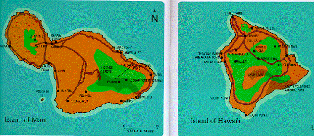

The Nene, endemic to the Hawaii, was originally confined to the islands of Maui and Hawaii. Occasionally, the Hawaiian Goose, straggled to outer islands, but these other islands did not have the upland foraging grounds necessary to the birds survival. The nene are most commonly found on the mountains of Mauna Loa and Haleakala. They are also found in Hualalai, Pu'u Wa'awa'a, and Pohakuloa on the island of Hawaii. A small Nene population resides in the lowlands of Kaua'i. There are Nene rearing programs located in Volcanoes National Park on the Big Island, Haleakala National Park on Maui, and The Honolulu Zoo and Waimea Falls Park on Oahu. The Slimbridge Wildfowl Trust in England has established a Nene restoration project that has released 197 birds on the island of Maui.
